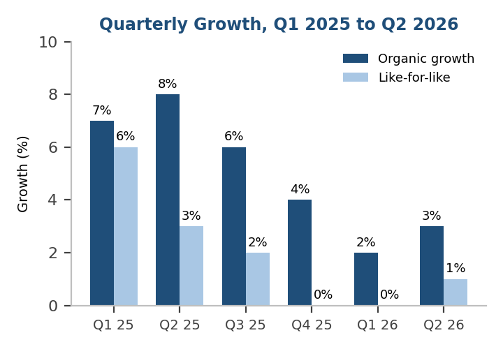
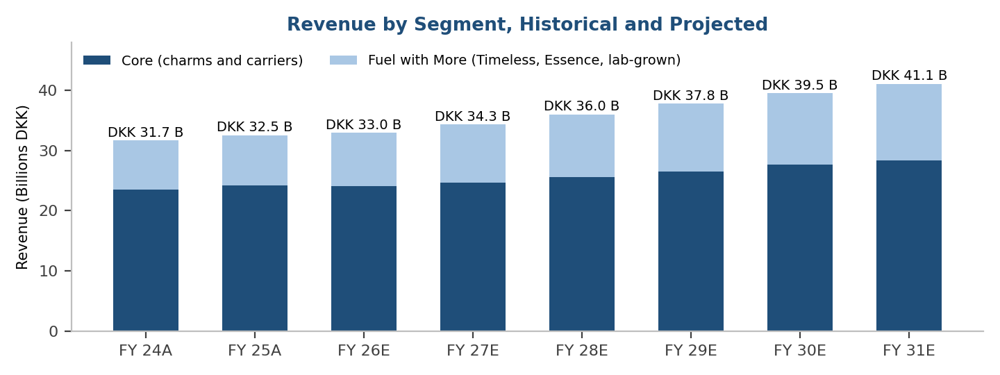
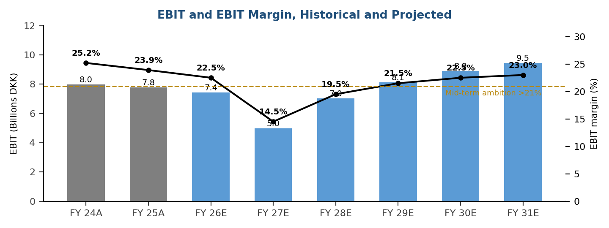
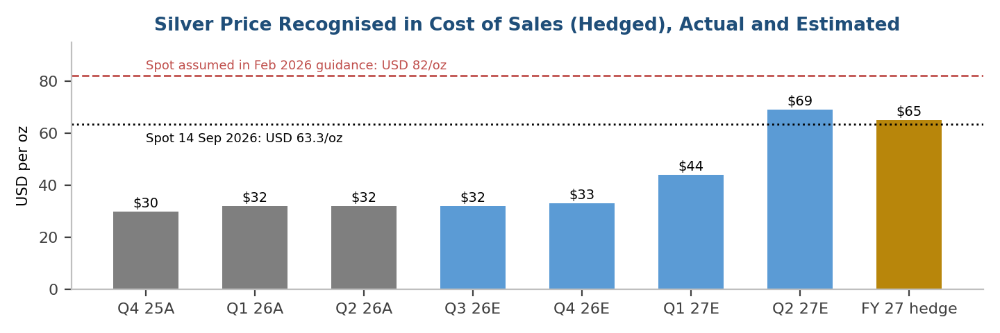
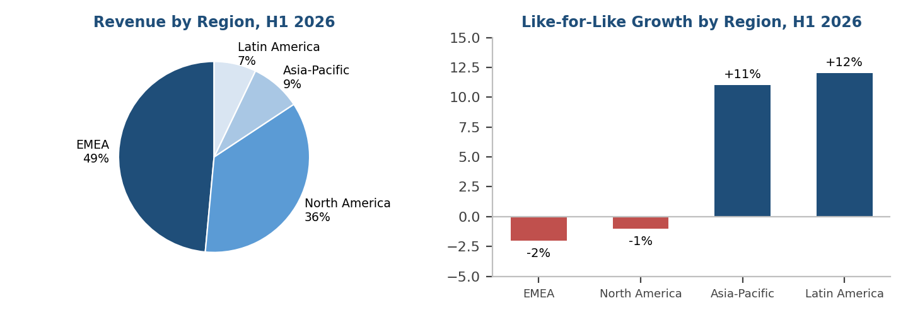
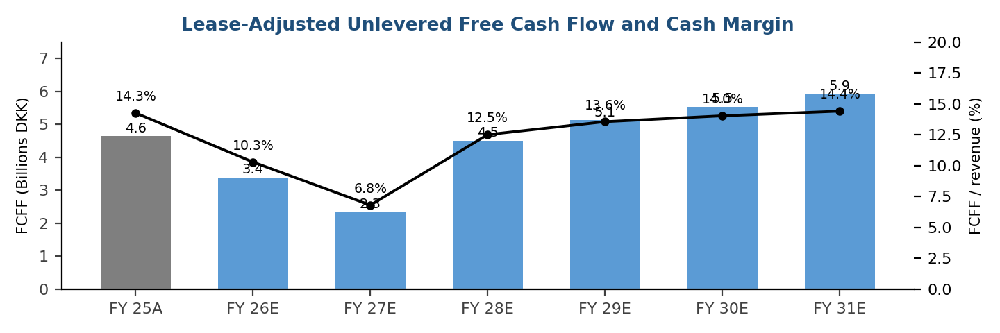
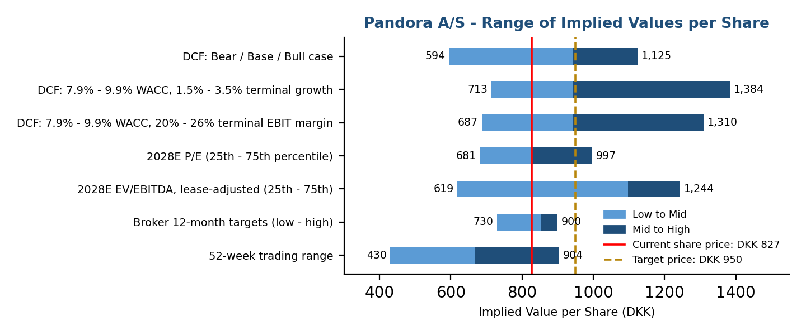

| Rating: | BUY* |
| Price (7 Sep 26, DKK): | 827.4 |
| Target Price (DKK): | 950 |
| 52-Week Price Range: | 430 to 904 |
| Market Cap. (DKK M): | 61,890 |
| Enterprise Value (DKK M): | 77,533 |
Lucile Engelaere
Master 1 CCA, IAE Lyon

Pandora A/S (CPSE: PNDORA)
The Silver Trough Is Known and Hedged; the Platinum Recovery Is Not in the Price
- Solid 1H26 in a difficult market: Pandora delivered 2% organic growth in the first half with flat like-for-like (LFL) sales, a gross margin of 80.0% and an EBIT margin of 20.6% despite around 300bp of external headwinds from silver, tariffs and currencies. Q2 marked an inflection: LFL turned positive (+1%), Fuel with More accelerated to +6% LFL and current trading in Q3 is running at mid-single-digit LFL. Guidance was raised on 12 August to 0-3% organic growth and a 22-23% EBIT margin (including c.100bp of one-off US tariff refunds).
- Financial Guidance: Management guides to an EBIT margin of at least 12% in FY 27 (14% before one-off transition costs), a floor built with silver at USD 82/oz, and to a mid-term EBIT margin above 21% once the silver-to-platinum transition is complete in FY 28. We believe the FY 27 floor is conservative: 90-100% of FY 27 silver is now hedged at c.USD 65/oz (management sizes this at c.200bp) and the US tariff on Thai imports is assumed at 12.5% rather than 19%. We forecast a 14.5% reported margin in FY 27 and 23.0% by FY 31.
- Catalysts: 1) Q3 results and strategic update on 4 November. Management will give its first direction on the FY 27 margin. 2) Broader platinum-plated test in Q4 26 after an encouraging Dutch pilot. 3) Resumption of share buybacks, paused in 2026 after DKK 4.4 billion repurchased in 2025. 4) US consumer recovery in a region that is 36% of sales and was flat LFL in Q2.
- Our DKK 950 target price blends our DCF (DKK 944, 70% weight; WACC 8.9%, terminal growth 2.5%) with FY 28E peer multiples (median P/E 14.9x and lease-adjusted EV/EBITDA 12.4x, 15% each). At the current price the market implies a steady-state EBIT margin of only 20.5%, below management's own ambition. We initiate with a BUY rating: 15% upside plus a 2.7% dividend yield.
Financial and Valuation Metrics (Fiscal Year Ends 31 December)
| Year | FY 25A | FY 26E | FY 27E | FY 28E | FY 29E |
|---|---|---|---|---|---|
| Revenue (DKK M) | 32,549 | 32,972 | 34,291 | 36,006 | 37,806 |
| Organic / DKK revenue growth | 2.7% | 1.3% | 4.0% | 5.0% | 5.0% |
| EBIT (DKK M) | 7,783 | 7,419 | 4,972 | 7,021 | 8,128 |
| EBIT Margin (%) | 23.9% | 22.5% | 14.5% | 19.5% | 21.5% |
| Reported EPS (DKK) | 68.10 | 63.11 | 39.83 | 60.87 | 72.48 |
| Reported P / E (x) | 12.1x | 13.1x | 20.8x | 13.6x | 11.4x |
| EV / EBITDA, IFRS 16 basis (x) | 7.5x | 7.7x | 10.0x | 7.8x | 6.9x |
| Lease-adjusted FCFF Yield on EV (%) | 6.5% | 4.8% | 3.3% | 6.3% | 7.2% |
| Dividend per Share (DKK) | 22.00 | 22.00 | 22.00 | 22.00 | 22.00 |
Source: Company data, L. Engelaere estimates. FY 26E EBIT includes c.DKK 330 M of one-off US tariff refunds; FY 27E includes c.2pts of platinum transition costs.
Operations

- Q2 Results: Revenue of DKK 7,219 M (+3% organic, +2% in DKK) with LFL of +1%, network expansion contributing 4% and a 2% drag from lower partner sell-in. The Core segment (74% of revenue; charms and carriers) was -1% LFL as Moments, 60% of group sales, continued to decline; Fuel with More (26%) accelerated to +6% LFL, led by Timeless (+13%). Newness is gaining traction where the design reset has been applied, with recent launches outperforming the base assortment.
- Outlook: We forecast revenue growth in DKK of 1.3% in FY 26 (in line with the 0-3% organic guidance less a c.0.6% currency headwind), recovering to 4-5% in FY 27-29 as the new design and marketing model reaches the core aesthetics, then fading to 4% by FY 31. Network expansion continues to add 2-3% per year: management targets 50-75 net concept store openings in FY 26 and new stores reach 35-40% EBIT margins in year one. We assume Fuel with More rises from 26% to 31% of revenue by FY 31.
- Assumptions: We do not assume a return to the 7-8% organic growth of the Phoenix strategy years. Our FY 25-31E revenue CAGR of 4.0% sits below management's high-single-digit ambition, which was set in 2023 at a silver price of USD 24/oz and before the current US consumer slowdown.

- Historical Performance: The EBIT margin fell from 25.2% in FY 24 to 23.9% in FY 25, entirely because of c.300bp of external headwinds (commodities 150bp, FX and US tariffs) that pricing, efficiencies and channel mix could only partly offset. Underlying margin discipline is intact: FY 25 OPEX fell 20bp as a share of revenue in constant currency, helped by the Silverstone cost programme.
- Outlook: FY 26 lands at 22.5% (guidance 22-23%) with c.100bp of one-off tariff refunds. FY 27 is the trough at 14.5% reported, as silver hedged at c.USD 65/oz (vs USD 32/oz in FY 26) flows through cost of sales and c.2pts of one-off transition costs are booked. From FY 28, roughly 80% of the silver assortment is platinum-plated and the margin rebuilds to 19.5%, then 21.5% in FY 29 and 23.0% by FY 31.
- Assumptions: Gross margin of 78-80% before commodities; marketing held at 13-15% of revenue; store expansion accretive by 30-50bp a year; effective tax rate of 25% after the expiry of Thai incentives. We stop at 23.0%, between management's >21% ambition and the 25% delivered before the silver spike, because platinum carries its own cost and part of the saving will be reinvested in price.

- Hedging Mechanics: Pandora hedges at least 70% of the next twelve months of silver and gold purchases; hedged metal reaches the income statement five to ten months after purchase. As a result the FY 26 P&L is fully hedged at c.USD 32/oz while the FY 27 P&L is 90-100% hedged at c.USD 65/oz. The shock is therefore both visible and bounded: nothing that happens to spot silver in the next twelve months changes the FY 27 cost base by more than a few basis points.
- Outlook: Silver spot stood at USD 63.3/oz on 14 September 2026, slightly below the FY 27 hedge and well below the USD 82/oz assumed when the FY 27 floor was set in February. The February bridge sized the unmitigated headwind at c.1,100bp of margin at USD 82/oz silver and USD 4,730/oz gold; in order of magnitude that is c.20bp of EBIT margin per USD 1/oz of silver. Once 80% of the silver assortment is plated, we estimate that sensitivity falls to roughly a fifth, before the new (smaller) platinum exposure.
- Assumptions: We model the silver cost path shown above and a platinum-plated share of the relevant assortment of c.50% in FY 27 and c.80% from FY 28. Platinum hedging starts in Q3 26. The one-off transition capex of c.DKK 600 M (c.DKK 400 M in FY 26) is included in our 7.0% FY 26 capex ratio.

- Two-Speed Growth: Mature markets with a high share of Core (Italy, UK, France, Germany) remain negative LFL, while Latin America (+18% LFL in Q2 after a broad price repositioning) and Asia-Pacific (+10%, driven by Japan where revenue more than doubled in 2025) are accelerating. North America, 36% of sales, was -1% LFL in Q2 with the US at 0%, as mid- and lower-income consumers pulled back.
- Outlook: Management is calibrating the growth engine by market maturity: scaling proven drivers in under-penetrated markets and rebalancing marketing towards earned media and local activation in saturated ones (41-store pilot in Italy, Milan and Barcelona flagships, Pandora Wonders platform launched in Paris in July). We assume the US returns to low-single-digit LFL in FY 27 and that EMEA stabilises; Latin America and Asia-Pacific remain the growth engines but are only 16% of revenue.
- Channel Mix: Pandora-operated retail (stores and online) was 87% of H1 26 revenue, up from 86% in FY 25, and wholesale fell 10% as partner stores are taken over. Forward integration is limited in FY 26 (a 30bp margin tailwind as last year's inventory buybacks lapse).

- Cash Generation: Pandora converted 65% of EBITDA into free cash flow in FY 25 on the company's definition (DKK 5.0 billion) and returned DKK 5.9 billion to shareholders (DKK 1.6 billion dividend, DKK 4.4 billion buybacks). ROIC was 41% in FY 25 and 39% at H1 26 despite the commodity headwinds. We define FCFF after lease payments so that store rents are treated as the operating cost they are.
- Working Capital and Capex: Inventories rose to 17.8% of revenue at H1 26 (14.6% a year earlier) because of higher metal prices and a deliberate build ahead of the platinum launch; management expects them to normalise once the transition is complete. We model a working-capital outflow of c.DKK 850 M in FY 26 reversing from FY 28. Capex is 7.0% of revenue in FY 26 (guidance c.7%) falling to 5.8%.
- Capital Returns: Leverage was 1.5x NIBD/EBITDA at H1 26, the top of the 0.5-1.5x policy range at the seasonal peak. Buybacks are paused until the platinum transition is further progressed; the DKK 22 dividend is maintained. We hold the share count flat at 74.8 M, so any resumption of buybacks is upside to our EPS and target price.
Valuation
Summary
Our target price of DKK 950 is based on a combination of:
- Discounted Cash Flow Analysis (70% weight): Our Base Case, with a WACC of 8.9% (cost of equity 9.9%, 10-year Bund of 3.3%, beta of 1.20, equity risk premium of 5.5%) and a terminal FCFF growth rate of 2.5%, produced an implied share price of DKK 944. The terminal value is 74% of enterprise value and equates to 8.9x FY 31E EBITDA after leases.
- Multiples (30% weight): The median FY 28E P / E and lease-adjusted EV / EBITDA multiples for the comparable companies are 14.9x and 12.4x. Applied to Pandora's FY 28E EPS of DKK 60.9 and EBITDA after leases of DKK 8,029 M, and discounted one year at the cost of equity, they imply DKK 825 and DKK 1,097. We use FY 28E rather than FY 27E because FY 27 is the transition trough and its multiples (20.8x P / E) are not representative.
- Reverse DCF: Holding our growth path constant, the current share price of DKK 827 is consistent with a steady-state EBIT margin of 20.5%. Management's mid-term ambition is above 21% and Pandora earned 25% in FY 22-24 at far lower metal prices.

- Current Share Price: At DKK 827, Pandora appears undervalued relative to our DCF and to FY 28E peer multiples, and roughly in line with sell-side targets (consensus DKK 853, 5 Buy / 13 Hold / 1 Sell). The stock has recovered from DKK 430 in the spring, when silver hit a record and the FY 27 guidance was issued, but the recovery has tracked silver rather than the structural change in the cost base. We believe a price closer to DKK 950 would reflect the post-transition earnings power.
- Other Methodologies: We do not view Precedent Transactions as meaningful given the scarcity of listed-jewellery deals and the fact that the largest (LVMH / Tiffany) was struck at a hard-luxury premium that does not apply to accessible jewellery. The 52-week range is shown for reference only.
- Other Cases: Our Bull Case, with LFL back to 4-6% and the EBIT margin returning to the pre-2025 level of 25%, yields DKK 1,125 in the DCF; our Bear Case, in which the plated range disappoints, LFL stays negative in mature markets and the margin settles at 18%, yields DKK 594. The distribution is skewed to the upside from the current price, but the Bear Case shows that the thesis depends on the transition working commercially.
Comparable Public Companies
To value Pandora we used a set of listed jewellery and brand-led accessible-luxury companies, with a focus on FY 28E P / E and lease-adjusted EV / EBITDA multiples (we explain the adjustments below). Three additional names were screened and excluded.
Figure 8: Pandora Comparable Public Companies: Operating Statistics (US$ in Billions)
| Company Name | Equity Value | Enterprise Value | LTM Revenue | LTM EBITDA | EBITDA Margin | Rev. Growth | Beta |
|---|---|---|---|---|---|---|---|
| Signet Jewelers | 3.84 | 4.54 | 6.82 | 0.64 | 9.3% | -0.5% | 1.11 |
| Tapestry, Inc. | 23.63 | 26.43 | 8.00 | 2.02 | 25.3% | 8.9% | 1.43 |
| Ralph Lauren Corp. | 20.20 | 21.26 | 8.36 | 1.59 | 19.1% | 14.0% | 1.35 |
| Chow Tai Fook Jewellery (2) | 17.60 | 18.70 | n.a. | n.a. | n.a. | n.a. | n.a. |
| Compagnie Financière Richemont (2) | 112.30 | 103.00 | 23.00 | 6.40 | 27.9% | n.a. | n.a. |
| Maximum | 112.30 | 103.00 | 23.00 | 6.40 | 27.9% | 14.0% | 1.43 |
| 75th Percentile | 23.63 | 26.43 | 12.02 | 3.12 | 26.0% | 11.4% | 1.39 |
| Median | 20.20 | 21.26 | 8.18 | 1.81 | 22.2% | 8.9% | 1.35 |
| 25th Percentile | 17.60 | 18.70 | 7.71 | 1.35 | 16.7% | 4.2% | 1.23 |
| Minimum | 3.84 | 4.54 | 6.82 | 0.64 | 9.3% | -0.5% | 1.11 |
| Pandora A/S | 9.61 | 12.04 | 5.04 | 1.62 | 32.1% | 2.4% | 1.20 |
Figure 9: Pandora Comparable Public Companies: Valuation Statistics
| Company Name | EV / LTM Revenue | EV / EBITDA | NTM P / E |
|---|---|---|---|
| Signet Jewelers | 0.7 x | 6.9 x | 8.0 x |
| Tapestry, Inc. | 3.3 x | 12.4 x | 14.9 x |
| Ralph Lauren Corp. | 2.5 x | 13.9 x | 18.0 x |
| Chow Tai Fook Jewellery (2) | n.a. | 7.5 x | 12.3 x |
| Compagnie Financière Richemont (2) | 4.5 x | 15.0 x | 24.0 x |
| Maximum | 4.5 x | 15.0 x | 24.0 x |
| 75th Percentile | 3.6 x | 13.9 x | 18.0 x |
| Median | 2.9 x | 12.4 x | 14.9 x |
| 25th Percentile | 2.1 x | 7.5 x | 12.3 x |
| Minimum | 0.7 x | 6.9 x | 8.0 x |
| Pandora A/S (at DKK 827; FY 28E P / E) | 2.4 x | 7.5 x | 13.6 x |
(1) Market data as of 14 September 2026. US-listed peers: equity value, EV, LTM revenue and EBITDA from Alpha Vantage; NTM P / E is the forward P / E reported by the same source. Pandora converted at USD/DKK 6.44; Pandora EV includes lease liabilities and EBITDA is on an IFRS 16 basis in Figure 8, while the P / E in Figure 9 is on FY 28E EPS.
(2) Chow Tai Fook and Richemont are outside the coverage of the data feeds used and are shown as estimates from public screens (Richemont: market cap c.CHF 100 billion, LTM revenue EUR 20.8 billion, EBITDA EUR 5.8 billion, net cash EUR 8.5 billion). These two rows must be verified on Bloomberg before use. Rev. growth is the latest reported quarter, year over year.
- Metrics and Multiples: We view FY 28E P / E and lease-adjusted EV / EBITDA as the most meaningful measures. LTM and FY 27E multiples are distorted by the transition: Pandora's FY 27E P / E of 20.8x compares with 13.6x on FY 28E. Revenue multiples are not meaningful across a set whose EBITDA margins range from 9% (Signet) to 32% (Pandora).
- Adjustments and Normalisations: The US peers report under US GAAP, where store rents remain above EBITDA, whereas Pandora reports under IFRS 16, where they are replaced by depreciation and interest. Applying US peer EV / EBITDA multiples to Pandora's IFRS 16 EBITDA would overstate its value by c.20%. We therefore apply them to Pandora's EBITDA after lease payments (DKK 8,029 M in FY 28E) and deduct net debt excluding lease liabilities (DKK 9,352 M). Both sides of the multiple are then on the same basis.
- Peer Selection: We screened Brilliant Earth (negative EBITDA), Capri Holdings (forward P / E of 6.5x against EV / EBITDA of 14.2x, distorted by disposals) and Movado (a wholesale watch distributor with a 9% operating margin) and excluded all three. The retained set mixes a direct jewellery peer at the low end (Signet), brand-owned accessible-luxury retailers (Tapestry, Ralph Lauren, Chow Tai Fook) and a hard-luxury reference at the top (Richemont). Pandora's 32% EBITDA margin and 39% ROIC are above every name in the set.
- Target Multiples and Price: We apply the median rather than the 75th percentile, despite Pandora's superior margins and returns, because the transition adds execution risk that the peers do not carry. The median FY 28E P / E of 14.9x implies DKK 825 and the median EV / EBITDA of 12.4x implies DKK 1,097; the 25th to 75th percentile ranges are DKK 681-997 and DKK 619-1,244.
Precedent Transactions
We do not view Precedent Transactions as a meaningful methodology for Pandora, but the selected set of jewellery and accessible-luxury deals is shown below:
Figure 10: Pandora Precedent Transactions
| Acquirer Name | Target Name | Date Announced | Percent Acquired | Enterprise Value (US$ M) | EV / LTM Revenue | EV / LTM EBITDA |
|---|---|---|---|---|---|---|
| LVMH Moët Hennessy Louis Vuitton | Tiffany & Co. | 2019-11-25 | 100.0% | 16,200 | 3.7 x | c.16 x |
| Tapestry, Inc. (terminated 2024) | Capri Holdings Ltd | 2023-08-10 | 100.0% | 8,500 | 1.5 x | c.9 x |
| Swatch Group AG | Harry Winston (jewellery and watches) | 2013-01-14 | 100.0% | 1,000 | n.a. | n.a. |
| Signet Jewelers Ltd | Diamonds Direct USA | 2021-10-04 | 100.0% | 490 | 1.1 x | n.a. |
| Signet Jewelers Ltd | Blue Nile, Inc. | 2022-08-05 | 100.0% | 360 | 0.7 x | n.a. |
| Richemont | Buccellati Holding Italia | 2019-09-27 | 100.0% | n.d. | n.a. | n.a. |
- Why Not Meaningful: Only two of the deals are large enough to be relevant, and both are imperfect: Tiffany was acquired by LVMH at a hard-luxury premium (c.16x EBITDA) that reflects Tiffany's brand tier, not Pandora's; the Capri transaction was blocked and terminated. Applying the c.9-16x EBITDA range to Pandora would give DKK 900-1,600 per share on FY 28E EBITDA after leases, a range too wide to inform a target.
Discounted Cash Flow (DCF) Analysis
To project Free Cash Flow and complete the DCF analysis, we relied upon our Base Case financial projections:
Figure 11: Pandora Projected P&L
| Income Statement (DKK M): | FY 25A | FY 26E | FY 27E | FY 28E | FY 29E | FY 30E | FY 31E |
|---|---|---|---|---|---|---|---|
| Revenue: | 32,549 | 32,972 | 34,291 | 36,006 | 37,806 | 39,507 | 41,087 |
| Revenue Growth: | 2.7% | 1.3% | 4.0% | 5.0% | 5.0% | 4.5% | 4.0% |
| Gross Profit (c.79% margin): | 25,714 | 26,048 | 27,090 | 28,444 | 29,867 | 31,211 | 32,459 |
| EBITDA (IFRS 16): | 10,316 | 10,089 | 7,750 | 9,938 | 11,191 | 12,089 | 12,778 |
| EBITDA Margin: | 31.7% | 30.6% | 22.6% | 27.6% | 29.6% | 30.6% | 31.1% |
| Operating Income (EBIT): | 7,783 | 7,419 | 4,972 | 7,021 | 8,128 | 8,889 | 9,450 |
| Operating (EBIT) Margin: | 23.9% | 22.5% | 14.5% | 19.5% | 21.5% | 22.5% | 23.0% |
| Net Financial Expenses: | (870) | (1,125) | (1,000) | (950) | (900) | (900) | (900) |
| Profit Before Tax: | 6,913 | 6,294 | 3,972 | 6,071 | 7,228 | 7,989 | 8,550 |
| Income Tax (25.0%): | (1,671) | (1,573) | (993) | (1,518) | (1,807) | (1,997) | (2,138) |
| Net Income: | 5,242 | 4,720 | 2,979 | 4,553 | 5,421 | 5,992 | 6,413 |
| Shares Outstanding (M): | 74.8 | 74.8 | 74.8 | 74.8 | 74.8 | 74.8 | 74.8 |
| Diluted Earnings Per Share (DKK): | 68.10 | 63.11 | 39.83 | 60.87 | 72.48 | 80.10 | 85.73 |
We then calculated Unlevered Free Cash Flow, after lease payments, as follows:
Figure 12: Pandora Projected Unlevered Free Cash Flow
| Unlevered Free Cash Flow Projections (DKK M): | FY 25A | FY 26E | FY 27E | FY 28E | FY 29E | FY 30E | FY 31E |
|---|---|---|---|---|---|---|---|
| Operating Income (EBIT): | 7,783 | 7,419 | 4,972 | 7,021 | 8,128 | 8,889 | 9,450 |
| Plus: Right-of-Use Depreciation: | 1,466 | 1,517 | 1,577 | 1,656 | 1,739 | 1,817 | 1,890 |
| Less: Lease Payments (Principal and Interest): | (1,682) | (1,748) | (1,817) | (1,908) | (2,004) | (2,094) | (2,178) |
| EBIT After Leases: | 7,567 | 7,188 | 4,732 | 6,769 | 7,864 | 8,613 | 9,162 |
| Less: Taxes, Excluding Effect of Interest: | (1,892) | (1,797) | (1,183) | (1,692) | (1,966) | (2,153) | (2,291) |
| Net Operating Profit After Tax (NOPAT): | 5,675 | 5,391 | 3,549 | 5,077 | 5,898 | 6,459 | 6,872 |
| Plus: Other Depreciation and Amortisation: | 1,067 | 1,154 | 1,200 | 1,260 | 1,323 | 1,383 | 1,438 |
| Less: Capital Expenditures: | (1,943) | (2,308) | (2,229) | (2,160) | (2,268) | (2,291) | (2,383) |
| Less: Increase in Net Working Capital: | (158) | (847) | (191) | 326 | 171 | (9) | (8) |
| Annual Unlevered Free Cash Flow: | 4,641 | 3,390 | 2,329 | 4,502 | 5,124 | 5,542 | 5,919 |
| FCFF / Revenue: | 14.3% | 10.3% | 6.8% | 12.5% | 13.6% | 14.0% | 14.4% |
| Unlevered FCF for Remaining Periods: | - | 2,981 | 2,329 | 4,502 | 5,124 | 5,542 | 5,919 |
| Mid-Year Discount Period: | - | 0.25 | 1.00 | 2.00 | 3.00 | 4.00 | 5.00 |
| Discount Factor: | - | 0.979 | 0.918 | 0.843 | 0.774 | 0.711 | 0.653 |
| Net Present Value of Free Cash Flow: | - | 2,918 | 2,139 | 3,797 | 3,967 | 3,941 | 3,865 |
Assumptions:
- Discount Rate: 8.9%, based on a cost of equity of 9.9% (10-year Bund 3.3%, beta 1.20 versus a sourced peer median of 1.35, equity risk premium 5.5%), an after-tax cost of debt of 3.2% and a 15% target debt weight, consistent with Pandora's 0.5-1.5x leverage policy. We use 5.5% rather than the 4.23% Damodaran-style premium for Denmark; the choice lowers our value by c.DKK 150 per share.
- Terminal Value: Long-term FCFF growth rate of 2.5%, or, alternatively, a terminal multiple of 8.9x FY 31E EBITDA after leases. The jewellery market has historically grown faster than nominal GDP.
- Other: Valuation date of 30 June 2026 (last balance sheet); mid-year convention; H1 26 FCFF subtracted; lease liabilities excluded from net debt, consistent with the lease-adjusted cash flows; share count held flat.
With these assumptions and the Free Cash Flow projections above, the DCF produced the following output:
Figure 13: Pandora Discounted Cash Flow (DCF) Analysis Output
| Sum of PV of Free Cash Flow (H2 26 to FY 31E): | 20,627 |
| PV of Terminal Value: | 59,326 |
| Implied Enterprise Value (excl. leases): | 79,953 |
| Less: Net Debt (excl. leases, 30 Jun 26): | (9,352) |
| Implied Equity Value: | 70,601 |
| Shares Outstanding (M): | 74.8 |
| Implied Share Price (DKK): | 943.87 |
| Current Share Price (DKK): | 827.40 |
| Premium / (Discount) to Current: | 14.1% |
| % of Implied Value from PV of TV: | 74.2% |
Sensitivity : Terminal FCFF Growth Rate vs. WACC and Implied Share Price (DKK):
| WACC \ g | 1.5% | 2.0% | 2.5% | 3.0% | 3.5% |
|---|---|---|---|---|---|
| 7.9% | 984 | 1,059 | 1,147 | 1,253 | 1,384 |
| 8.4% | 901 | 964 | 1,037 | 1,123 | 1,227 |
| 8.9% | 830 | 883 | 944 | 1,015 | 1,100 |
| 9.4% | 768 | 813 | 865 | 924 | 994 |
| 9.9% | 713 | 752 | 796 | 847 | 905 |
Sensitivity : Steady-State EBIT Margin vs. WACC and Implied Share Price (DKK):
| WACC \ margin | 20.0% | 21.5% | 23.0% | 24.5% | 26.0% |
|---|---|---|---|---|---|
| 7.9% | 984 | 1,065 | 1,147 | 1,228 | 1,310 |
| 8.4% | 891 | 964 | 1,037 | 1,110 | 1,183 |
| 8.9% | 812 | 878 | 944 | 1,010 | 1,076 |
| 9.4% | 745 | 805 | 865 | 925 | 985 |
| 9.9% | 687 | 741 | 796 | 851 | 906 |
Investment Thesis, Catalysts, and Risks
We believe that Pandora is undervalued and that a re-rating could occur within the next 12 months, resulting in our BUY recommendation, for the following reasons:
- The FY 27 Trough Is Known, Hedged and Probably Conservative: The 12% floor was set with silver at USD 82/oz; the FY 27 P&L is now 90-100% hedged at c.USD 65/oz (c.200bp), the Thai tariff assumption has fallen from 19% to 12.5%, and spot silver at USD 63/oz sits below the hedge. Consensus still anchors on the February bridge; we see the 4 November update as the moment it is revisited.
- Platinum Plating Changes the Structure, Not Just the Level, of Costs: About 65% of revenue is silver jewellery and 80% of that assortment moves to plated pieces on Pandora's EVERSHINE alloy by FY 28. A plated piece contains a fraction of the metal of a solid one, so margin sensitivity to silver falls by roughly four-fifths once the transition is complete. Management's >21% mid-term ambition was set at USD 82/oz; we see 23% as achievable and note that Pandora earned 25% in FY 22-24.
- Quality at a Trough Multiple, with Cash Returns Set to Restart: On FY 28E, the first clean year after the transition, Pandora trades at 13.6x P / E against a peer median of 14.9x, with a 39% ROIC, a 32% EBITDA margin and a lease-adjusted FCFF yield rising to 6.3%. Buybacks worth c.7% of the market value were paused, not cancelled; we take no credit for them.
- The Market Is Pricing a Permanently Lower Franchise: Our reverse DCF shows the current price implies a 20.5% steady-state EBIT margin, below both management's ambition and the historical range. Simply meeting the ambition is worth c.DKK 880 per share on our DCF; a return to 25% is worth more than DKK 1,000.
Our targeted share prices are as follows:
- Bull Case: DKK 1,125, based on LFL recovering to 4-6% from FY 27, FY 31E revenue of DKK 44.3 billion, a FY 27E EBIT margin of 16.5% and a steady-state margin of 25.0%.
- Base Case: DKK 950 (DCF DKK 944), based on FY 25-31E revenue growth of 4.0% a year, a FY 27E EBIT margin of 14.5% and a steady-state margin of 23.0%.
- Bear Case: DKK 594, based on LFL staying negative in mature markets, revenue growth of 1.7% a year, a FY 27E EBIT margin of 12.5% and a steady-state margin of 18.0% as plating requires price cuts and silver stays elevated.
Catalyst Calendar
- Q4 2026: Extended multi-market pilot of the platinum-plated range, after the Netherlands test launched in July.
- 4 November 2026: Q3 results and virtual strategic update, including a first indication of the FY 27 EBIT margin and the next strategic cycle.
- 1 December 2026: Paulo Garcia (ex-CFO of Walmart Mexico and Central America) becomes CFO; Anders Boyer remains until March 2027.
- February 2027: FY 26 results, FY 27 guidance, dividend proposal and a decision on resuming share buybacks.
- 2027: Roll-out of platinum-plated pieces to c.50% of the relevant silver assortment.
Investment Risks
The following represent the greatest risks to our investment thesis:
- Consumer Acceptance of Platinum Plating: Pandora's brand rests on precious metal at accessible prices. If shoppers see plated jewellery as a downgrade, Pandora would have to cut prices or slow the transition, keeping silver exposure high. The Dutch pilot is described as encouraging but covers a limited range; our Bear Case captures this outcome.
- Metal Prices: Silver swung from above USD 120/oz in January 2026 to USD 63/oz today. Hedging smooths the P&L for 12-18 months but does not remove the exposure, and platinum becomes a new input from FY 27. Each USD 10/oz on unhedged silver is worth c.200bp of margin before mitigation.
- US Consumer Demand: North America is 36% of sales and mid- to lower-income shoppers have been under pressure since the Middle East conflict lifted energy prices. Moments, 60% of revenue, is still declining; a weak holiday season would delay the LFL recovery we assume.
- Tariffs and Currencies: Pandora crafts in Thailand and sells mostly in dollars, euros and pounds while reporting in DKK. The US tariff on Thai goods, now assumed at 12.5%, could change again; a weaker dollar hurts reported revenue but helps production costs.
- Discount Rate: Bund yields are at 15-year highs and the ECB is tightening. A 50bp higher WACC lowers our DCF value by c.DKK 79 per share.
Other company-specific and industry-specific risks include (1) growing competition in accessible jewellery, including lab-grown diamond specialists; (2) execution risk during a period of leadership change (new CEO, Chief Product Officer and head of North America in 2026, CFO handover in December); (3) the ability to re-energise Moments, 60% of revenue; (4) the 13% holding of Parvus Asset Management and possible activist pressure on capital allocation; and (5) the expiry of Thai tax incentives.
Appendix: Data Provenance and Model Structure
Every hard-coded number in the accompanying model carries a cell comment with its source, document and date. The table below summarises where each input comes from and which ones still need to be verified on a professional terminal before the report is used.
Figure 14: Data Provenance
| Input | Source | Date | Status |
|---|---|---|---|
| Historical financials, guidance, hedge book, store network | Pandora interim reports Q4 25, Q1 26, Q2 26 (Company Announcements 997, 1012, 1015) | Feb-Aug 2026 | Primary source |
| Shareholder register (Parvus 12.55%) | Pandora Company Announcement 1017 | 20 Aug 2026 | Primary source |
| Signet, Tapestry, Ralph Lauren multiples, betas, market caps | Alpha Vantage COMPANY_OVERVIEW | 14 Sep 2026 | Sourced |
| Silver and gold spot prices | Alpha Vantage GOLD_SILVER_SPOT | 14 Sep 2026 | Sourced |
| Equity risk premium reference for Denmark (4.23%) | Financial Modeling Prep, market-risk-premium | 14 Sep 2026 | Sourced, not applied |
| Brilliant Earth, Capri, Movado (screened, excluded) | Alpha Vantage COMPANY_OVERVIEW | 14 Sep 2026 | Sourced |
| Pandora share price (DKK 827.4) and broker targets | Investing.com | 7 Sep 2026 | To verify |
| Chow Tai Fook and Richemont multiples | Public screens (StockAnalysis, Seeking Alpha); own estimates | Aug-Sep 2026 | To verify |
| Risk-free rate (10-year Bund 3.25%) | Trading Economics | Aug 2026 | To refresh |
| Precedent transaction values and multiples | Company announcements, press reports | 2013-2023 | To verify |
Model structure (Pandora_Equity_Research_Model.xlsx, 9 tabs, 929 formulas):
- Inputs: market data, scenario selector (1 = Bear, 2 = Base, 3 = Bull), revenue growth and EBIT margin paths per scenario, operating ratios, WACC inputs, target-price weights and the rating rule.
- Historicals and Forecast: FY 24A to H1 26 as reported, with the lease-adjusted FCFF definition applied to FY 25A; six-year projections driven from Inputs.
- WACC, DCF, Scenarios: CAPM cost of equity; DCF from 30 June 2026 with two sensitivity tables; the three scenarios computed in parallel with a reconciliation check against the DCF tab, plus a reverse DCF that returns the market-implied steady-state margin.
- Comps and Summary: peer multiples with sources, lease-basis adjustment, football field and blended target price.
About the analyst
Lucile Engelaere is a Master 1 student in Accounting, Control and Audit (CCA) at IAE Lyon, Université Jean Moulin Lyon 3. She completed a work-study placement at a jewellery manufacturing group (multi-entity bookkeeping, a company acquisition, an ERP implementation) and an internship in Bangkok, which is why Pandora's value chain and Thai sourcing are familiar ground. She has a confirmed end-of-studies internship in audit at Forvis Mazars Paris, is pursuing the ACCA qualification and aims at a career in international finance, M&A and transaction services.
This report was prepared by a student as part of an application to a master's programme in finance. It is based on public information believed to be reliable but not independently verified, and does not constitute investment advice or an offer to buy or sell securities. Sources: Pandora A/S interim reports Q4 2025, Q1 2026 and Q2 2026; Alpha Vantage and Financial Modeling Prep (data pulled 14 September 2026); Investing.com; Trading Economics.